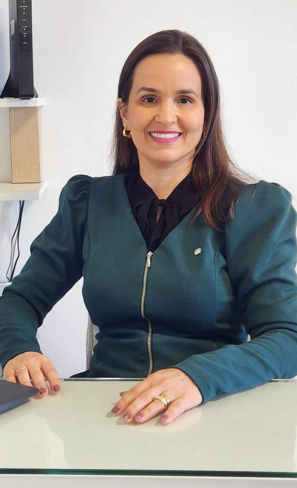
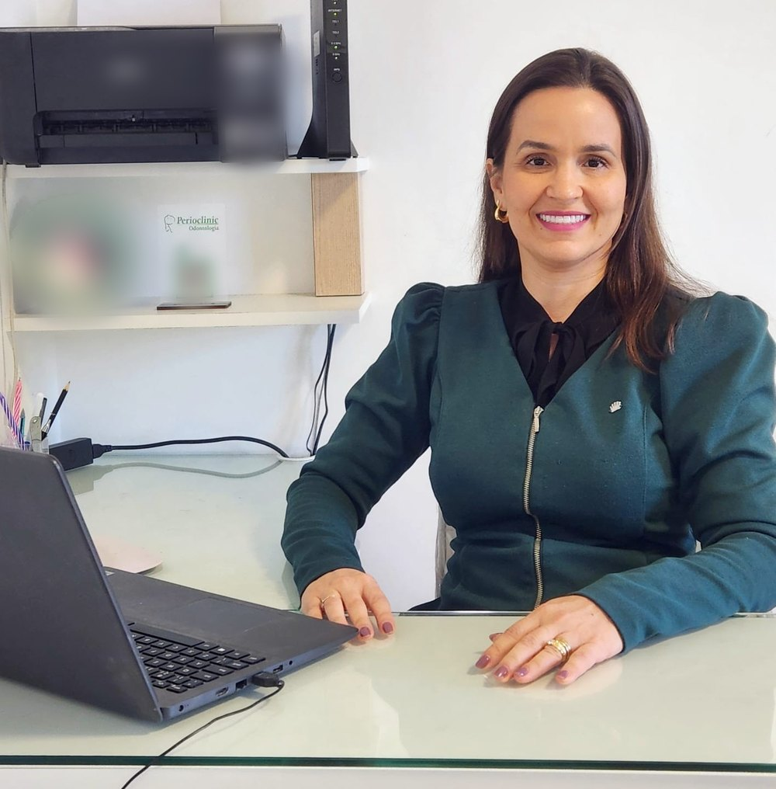
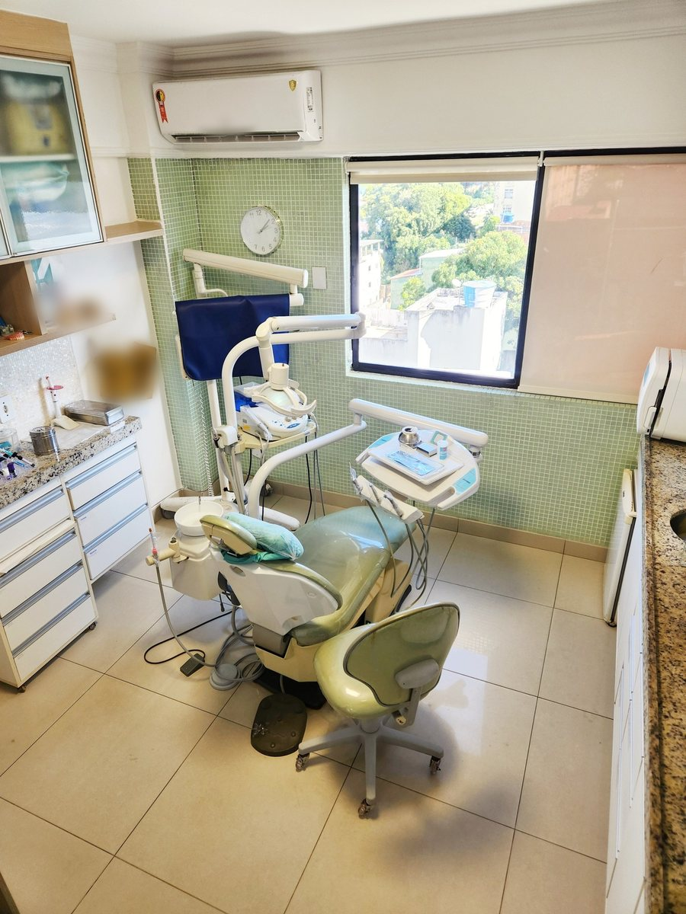

Cirurgiã-dentista · CRO-BA 8376
Dra. Itana
Andrade
Especialista em Periodontia e em Implantodontia, registradas no CRO-BA.
Saúde da gengiva, implantes com indicação, cirurgia periodontal estética e prevenção, no consultório dela em Brotas desde 2009. Antes de qualquer tratamento, a pergunta é o que pode ser preservado.
5,0★★★★★119 avaliações no Google
 Perioclinic
PerioclinicBrotas Master · sala 209
Por onde começar
O que trouxe você até aqui?
As áreas que a Dra. Itana divulga, cada uma numa página para ler com calma antes da avaliação. A informação é geral; a indicação é individual, definida na avaliação.
Minha gengiva sangra
Gengivite, periodontite, tratamento e o que observar.
Periodontia ImplantesPerdi ou vou perder um dente
Preservar primeiro; implante quando há indicação.
Implantes Contorno da gengivaGengiva aparente ou irregular
Gengivoplastia e aumento de coroa clínica.
Cirurgia estética PrevençãoQuero manter o que tenho
Consultas periódicas e retorno combinado.
PrevençãoA gengiva primeiro
Antes de um implante, duas perguntas.
“Às vezes o paciente chega com a solução pronta: “Doutora, quero tirar esse dente e colocar um implante.” Eu entendo de onde vem essa decisão. […] Mas antes de concordar, eu preciso avaliar duas coisas.”
Legenda da Dra. Itana no Instagram, 30/09/2026 · ver o post- 01Esse dente realmente não pode mais ser preservado?
Preservar o que é seu vem antes. A avaliação olha a raiz, o osso e a gengiva ao redor do dente.
- 02A boca está em condições adequadas para receber esse tratamento agora?
“Se encontro uma doença periodontal ativa, por exemplo, minha prioridade pode ser outra.”
- →“Ele precisa ter indicação.”
“Implante não deveria ser uma decisão baseada apenas no desejo de fazer um procedimento.”
“Às vezes meu trabalho é dizer “vamos fazer”. Às vezes é dizer “ainda não”. E às vezes é explicar por que eu escolheria outro caminho.”
Implantes, com indicaçãoQuando a gengiva sangra
Sangramento recorrente merece investigação.
“‘Doutora, minha gengiva sempre sangrou.’ Essa é uma frase que escuto no consultório […]”
“Se o sangramento aparece com frequência, eu não quero apenas saber que ele existe. Quero entender:”
Legenda da Dra. Itana no Instagram, 02/10/2026 · ver o post
Periodontia e saúde da gengiva- Há quanto tempoacontece?
- Em quaisregiões?
- Com quefrequência?
- Existem outrasmudanças associadas?
Trajetória
Da UFBA à sala 209.
A formação vem do perfil público dela no LinkedIn (autodeclarado); o consultório, do cadastro da Receita Federal; as especialidades, do painel oficial do CRO-BA. Cada etapa traz a fonte.
- 2001–2005Odontologia na UFBA
Graduação na Universidade Federal da Bahia.
Fonte: LinkedIn, autodeclarado - 2006Dentista na Perioclinic
Início na Perioclinic, em Brotas.
Fonte: LinkedIn, autodeclarado - 2009Consultório próprio
Abertura da Perioclinic Odontologia Ltda., em 03/07/2009, com a Dra. Itana como sócia.
Fonte: Receita Federal - 2025Cirurgia gengival em parceria
Uma colega credita a ela a plastia gengival de um caso feito em conjunto.
Fonte: Instagram de colega, 13/03/2025 - HojePeriodontia e Implantodontia
As duas especialidades registradas no CRO-BA, no mesmo endereço da clínica.
Fonte: painel oficial do CRO-BA

Na voz da Dra. Itana
“Prevenção também é preservar o que você já tem.”
“Prevenir quase sempre exige menos do que reparar um problema depois que ele avançou. […] Por isso eu prefiro que meus pacientes não procurem o dentista apenas quando alguma coisa dói, quebra ou começa a incomodar. Prevenção também é preservar o que você já tem.”
Legenda da Dra. Itana no Instagram, 08/10/2026 · ver o post
“No consultório, eu falo muito sobre não esperar a dor para começar a cuidar.”Legenda da Dra. Itana no Instagram, 01/10/2026 · ver o post
Avaliações
5,0 no Google, em 119 avaliações.
Trechos curtos de avaliações públicas da ficha da clínica, sobre o atendimento. Nomes abreviados.
Dra Itana foi muito acolhedora. Me explicou detalhadamente como seria o procedimento.
[…] sabe lidar com pacientes que tem fobia, é realmente um tratamento diferenciado e humanizado.
Cuidadosa, acertiva, paciente e não esquece de enviar mensagem, para nos avisar sobre o período do retorno! […] Já estou com ela há mais de 10 anos
Dr Itana é uma profissional de excelência, muito cuidadosa,e detalhista
[…] fui muito bem atendida desde o primeiro contato. A Dra Itana […] muito atenciosa, explica tudo de forma clara
Excelente..Dra : Itana..muito atenciosa,agradável..a assistente também.
São profissionais que se preocupa com o bem estar do paciente em todas as fases do atendimento. São pontuais, responsáveis, simpáticos
O atendimento dessa Clínica, desde a recepção, procedimentos e o acompanhamento […] é centrada no HUMANO
Conteúdos
O que ela escreve no Instagram.
Legendas recentes de @dra.itanaandrade, em primeira pessoa, sobre gengiva, implantes e prevenção.
Por que ela avalia duas coisas antes de concordar.
Ler a legenda ↗Instagram · 02/10/2026“Doutora, minha gengiva sempre sangrou.”Sangramento recorrente merece investigação — e largar o fio não resolve a causa.
Ler a legenda ↗Instagram · 05/10/2026Consultas periódicasAcompanhar dentes e gengiva antes que algo comece a incomodar.
Ler a legenda ↗Instagram · 08/10/2026Prevenir exige menos do que reparar“Prevenção também é preservar o que você já tem.”
Ler a legenda ↗Consultório
Empresarial Brotas Master, sala 209.
Na Av. Dom João VI, em Brotas. Estacionamento coberto gratuito e acesso para cadeira de rodas, segundo a ficha da clínica no Google. Veja a clínica e a equipe.

Perioclinic OdontologiaEmpresarial Brotas Master · Sala 209
Av. Dom João VI, 2082 · Brotas · Salvador – BA · 40285-000
Atendimento com hora marcada
Horário da ficha da clínica no Google (segunda a sexta, 8h às 18h); a pausa de almoço, das 12h às 13h30, foi informada pela Dra. Itana numa resposta no Google. Atendimento com hora marcada — confirme com a equipe.
Dúvidas frequentes
Perguntas comuns
Onde fica o consultório?
Na Perioclinic Odontologia, Empresarial Brotas Master, sala 209, Av. Dom João VI, 2082, Brotas, Salvador. A ficha da clínica no Google indica estacionamento coberto gratuito. Veja a clínica e o mapa.
Como agendar uma avaliação?
Pelo WhatsApp da clínica, (71) 99139-5762, ou pelo telefone (71) 3356-3859. A equipe combina dia e horário.
Qual é o horário?
Segunda a sexta, das 8h às 18h, com pausa para o almoço das 12h às 13h30. Atendimento com hora marcada — confirme com a equipe.
Quais são as especialidades da Dra. Itana?
Periodontia e Implantodontia, as duas registradas no CRO-BA (CRO-BA 8376). Ela também atua em cirurgia oral menor e clínica geral. Veja a trajetória com as fontes.
Já me disseram que preciso de implante. A avaliação confirma?
A avaliação começa pelo dente e pela gengiva: se o dente pode ser preservado e se a boca está pronta para um implante agora. A indicação é individual, definida na avaliação.
Tenho medo de dentista. Posso ir mesmo assim?
Pode, e vale contar isso logo no agendamento. Veja como é a primeira avaliação.
Aceita convênio?
Confirme com a equipe, pelo WhatsApp, as condições de atendimento.
Agende
Comece por uma avaliação, com calma.
Perioclinic Odontologia, Empresarial Brotas Master, sala 209, em Brotas. A equipe combina dia e horário pelo WhatsApp (71) 99139-5762.